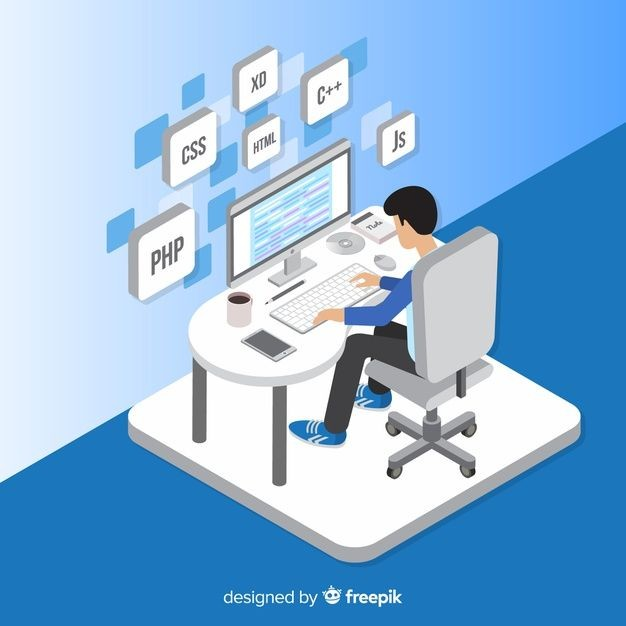
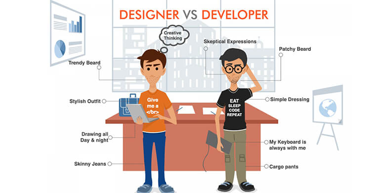
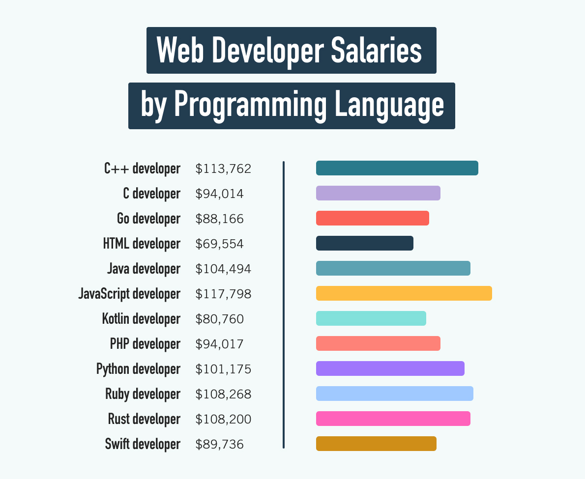

What is Web Development?
Web development is the building and maintenance of websites; it’s the work that happens behind the scenes to make a website look great, work fast and perform well with a seamless user experience.
Read More
What Are the Most Common Web Development Languages?
If you want to go up the ranks from junior developer to senior software engineer, you’ll have to be fluent in multiple languages. Coding languages can be used in different ways; some are favored in certain industries, or are specific to frontend or backend development. They each have their strengths and weaknesses. Many new developers start by learning a frontend language, like HTML, CSS or JavaScript.
Read More
Web Design Vs. Web Development
Web Designer: A web designer is a person that makes the website looks good. They mainly refer to the splendiferous portion of the website as well as it’s usability. The main responsibility of Web Designers is to focus on the style and overall feel of the website using different software like Photoshop, Corel Draw, etc to make the website more attractive.
Web Developer: Web developers are generally called programmers. They take the design created by the web designers and convert it into a fully functioning website. They use different software and tools like Javascript, jQuery, Node.js, PHP, ASP.NET Python, etc. Their main aim is to build a smooth-running, well-functioning website. Web developers are responsible for the collaboration with UX designers, UI designers, and visual designers to create web pages based on the design provided by the designer.
How to Learn Web Development
Start learning. If you’re up for a challenge, you can start teaching yourself to code. Thanks to tools like YouTube, Eventbrite, and (of course) Google, you can quickly find thousands of lessons and web development certificates on any programming language under the sun.
Read MoreSkills Needed for Web Development
Anyone can learn to code, but not everyone will stick with it. If you have these three core skills, you’ll enjoy your web development journey, even after decades in the industry..
Read More
How Much Do Web Developers Make?
A career in web development will offer up plenty of growth opportunities so you can keep challenging yourself and improving your web development skills. And the paycheck doesn’t hurt. Entry-level web developers make around $65,000 a year according to Glassdoor. Senior web developers with several years of experience can expect an income of $88,000. Whether you decide to take your skills to a large company or mom-and-pop shop, you can look forward to a challenging and rewarding job as well as a great salary and benefits. But if your end goal is a high paycheck, your best bet is to start building websites in the healthcare industry or working for a tech giant like Facebook or Amazon.
Read More